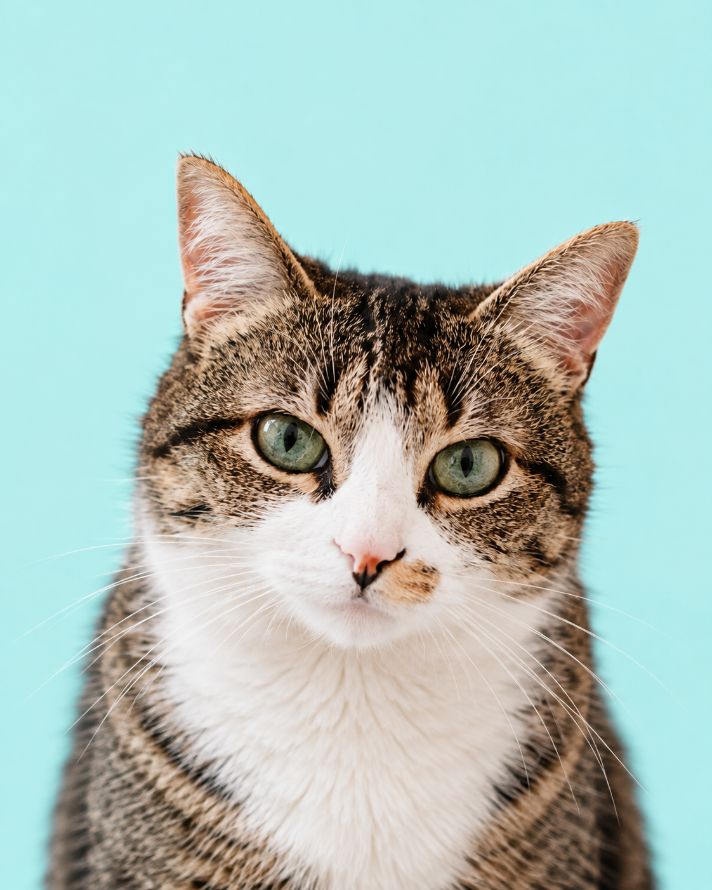

Volunteer
Support animal care, events, transportation, photography, administration, or community outreach.
Learn about volunteering →Get involved
Whether you have a few hours, a temporary home, or simply want to support the work, there’s a place for you at Pawsitive Futures.
 Every helping hand makes more room for care.
Every helping hand makes more room for care.
Choose your way to help
You can give your time, open your home, or help fund the everyday care animals need.
Support animal care, events, transportation, photography, administration, or community outreach.
Learn about volunteering →Give an animal a temporary, safe place to rest, recover, and build confidence before adoption.
Become a foster →Help cover food, veterinary care, supplies, enrichment, and the practical costs of rescue work.
Support the rescue →Volunteer with us
You don’t need professional animal-care experience to make a difference. We match volunteers with roles based on their interests, skills, comfort level, and availability.
Assist with feeding, enrichment, cleaning, and everyday routines that keep animals comfortable.
Welcome visitors, prepare spaces, support meet-and-greets, and help community events run smoothly.
Support safe transportation to foster homes, veterinary appointments, and adoption events.
Contribute photography, social content, administration, storytelling, or community outreach.
What to expect
Share your interests, availability, and the kind of support you’d like to offer.
Learn how Pawsitive Futures works, what different roles involve, and the safety basics.
We’ll help match you with opportunities that suit your schedule, comfort level, and strengths.
Choose opportunities that work for you and become part of the wider rescue community.
Is volunteering right for you?
Foster a pet
Foster families give animals somewhere safe to rest, recover, and build confidence while we search for the permanent home that suits them best.
I’m interested in fostering →
Placements vary depending on the animal and situation. We’ll discuss the expected commitment before a placement begins.
A safe, suitable environment, patience, basic daily care, and regular updates while the animal is with you.
Yes. Pawsitive Futures stays part of the process and provides guidance throughout the foster placement.
Support the rescue
Donations help provide the practical things animals need while they wait for home, from everyday supplies to medical care and safe shelter.
Meals, bedding, litter, cleaning supplies, toys, and enrichment.
Veterinary visits, medication, preventive care, and treatment when an animal needs it.
Help support animals while they wait for foster placement or their permanent home.
Meet us in person
Volunteer orientations, adoption days, and community workshops are an easy way to meet the team and see how you can take part.
Ready to get involved?
Share a little about your interests and availability so our team can help you find the right way to take part.